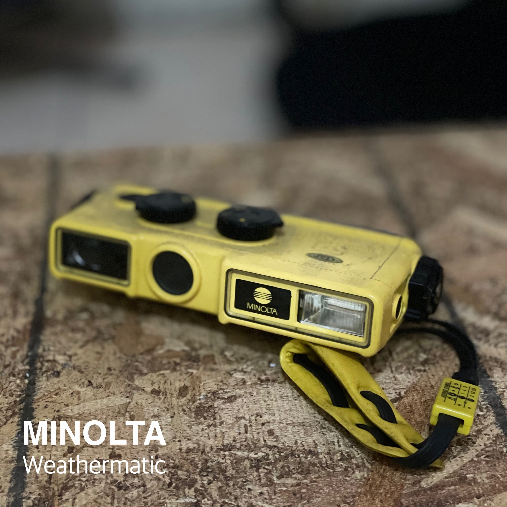

Gado-gado
Gado-gado (Indonesian or Betawi) is an Indonesian salad of raw, slightly boiled, blanched or steamed vegetables and hard-boiled eggs, boiled potato, fried tofu and tempeh, and sliced lontong (compressed cylinder rice cake wrapped in a banana leaf), served with a peanut sauce dressing.. This product can be viewed in augmented reality.